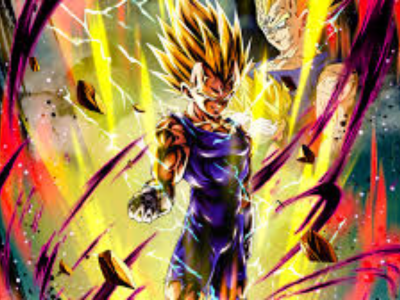

Vegeta
Vegeta é um personagem central na franquia Dragon Ball, criada por Akira Toriyama. Ele é um príncipe da raça Saiyajin, originária do planeta Vegeta, e é amplamente conhecido por sua determinação, orgulho e complexidade emocional. Inicialmente introduzido como um antagonista, Vegeta era um guerreiro cruel e arrogante que trabalhava para o exército de Freeza. Ele tinha um desejo insaciável por poder e buscava superar Goku, a quem via como seu principal rival e obstáculo para alcançar a supremacia. No entanto, ao longo da série, Vegeta passa por um notável desenvolvimento de personagem, transformando-se de um vilão impiedoso em um aliado valoroso e protetor da Terra.